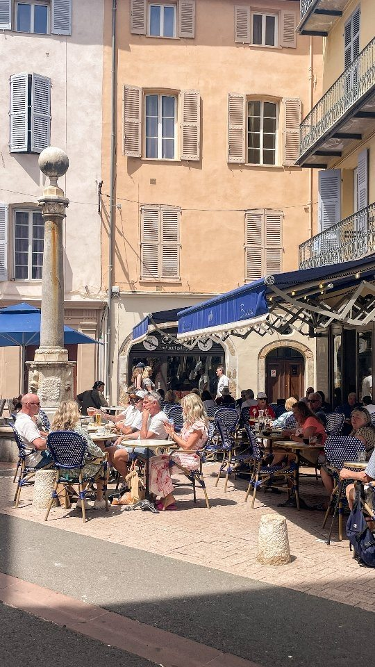
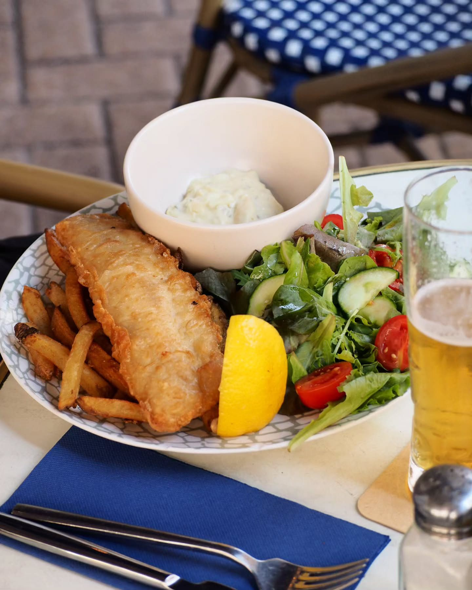
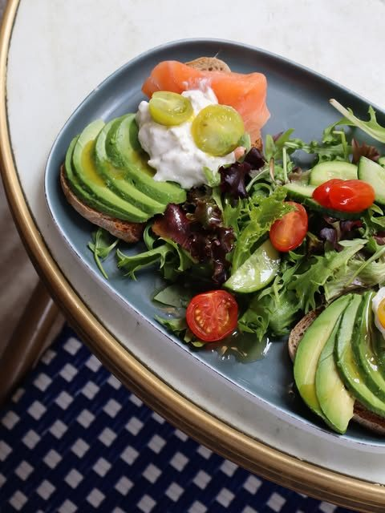
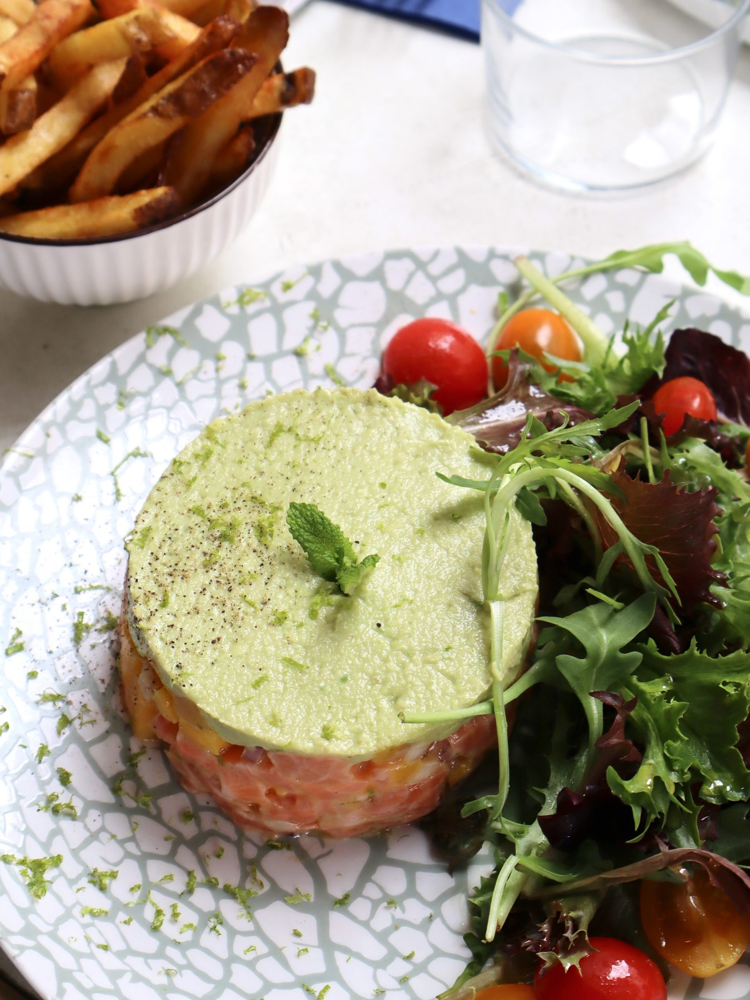
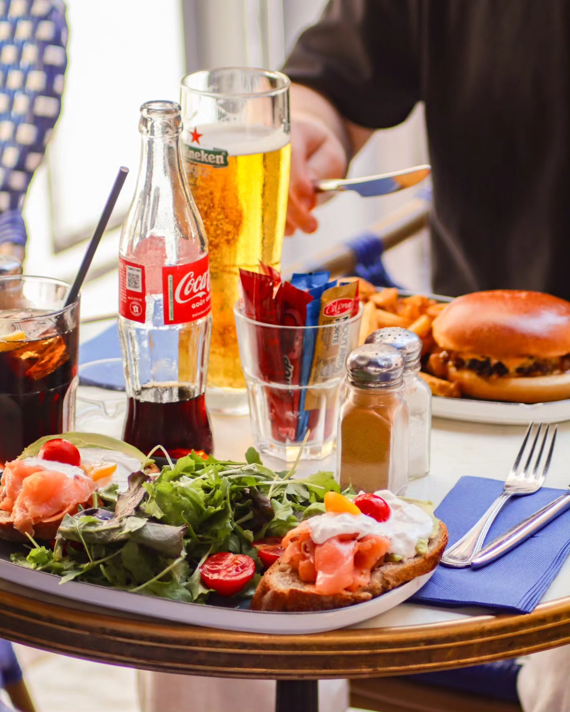

Fish & chips
Un grand classique de brasserie, à savourer en terrasse.
Une table en terrasse, les ruelles du Vieil Antibes et le plaisir simple de prendre son temps. Bienvenue chez Café Milo.

Au détour d’une rue du centre historique, Milo est l’adresse où l’on s’arrête pour déjeuner, boire un café ou faire durer le moment.
Une terrasse qui vit, des assiettes généreuses et le bleu de Milo en fil conducteur.




« Excellente surprise ! Le rapport qualité-prix est vraiment remarquable. Le service est rapide, efficace et agréable. »
Retrouvez-nous rue Georges Clemenceau, à deux pas des ruelles animées du centre historique.